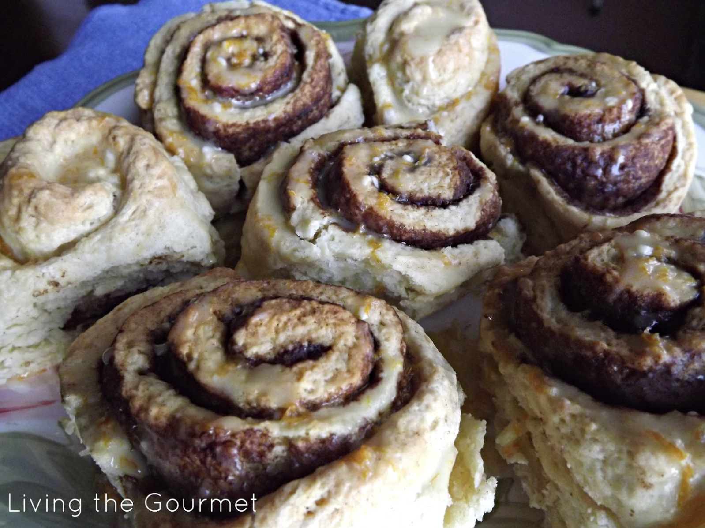

Instant Cinnamon Buns
Here is the recipe teaching you how to make amazingly delicious cinnamon buns topped off with a tangy orange
glaze.
Hope you enjoy!
Ingredients
FOR CINNAMON BUNS YOU WILL NEED:
- 2 1/2 cups all purpose flour
- 1/4 cup of sugar
- 1 1/2 teaspoons baking powder
- 1/2 teaspoon baking soda
- 1/2 teaspoon salt
- 1 cup buttermilk
- 1/4 cup whole milk
- 3/4 cup margarine (melted)
FOR FILLING YOU WILL NEED:
- 2 tablespoons margarine (melted)
- 1/2 cup brown sugar
- 2 tablespoons ground cinnamon
FOR ORANGE GLAZE YOU WILL NEED:
- 1/2 cup confectioners' sugar
- 1/2 teaspoon vanilla extract
- Approximately 5 tablespoons of whole milk
- 2 tablespoons orange zest
This recipe will make a light glaze. Double the sugar content if you desire a thicker glaze.
Preparation
- Preheat oven to 350 degrees F.
- Line a square baking dish and set aside.
- Combine all ingredients for cinnamon buns into the bowl of your stand mixer. Roll out on a well-floured
surface. Roll out into a 10 x 5 inch rectangle.
- Melt margarine for the filling and combine brown sugar and cinnamon in a small bowl.
Using a pastry
brush, spread the melted margarine over the dough. Sprinkle the cinnamon filling all over the dough.
- Gently roll the dough. Slice into logs, should make about 6 rolls.
- Place the rolls into prepared baking dish and lightly brush each roll with the remaining margarine.
- Bake for about 15 minutes
- Immediately remove the rolls from the pan and transfer to a dish
- Combine all ingredients for orange glaze and drizzle over the buns. Best if served warm with a cup of
coffee.
This recipe and its accompanying image is from foodista.com created by Catherine Pappas, author of the blog 'Living The Gourmet'.